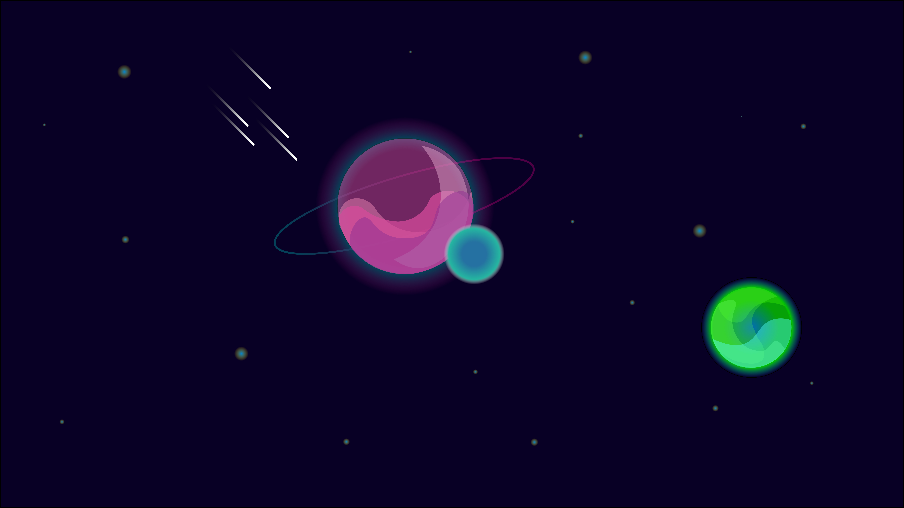

Visuel
Un graphiste hors paire, un designer de talent, un programmeur de génie... Vous l'avez bien compris cet début de paragraphe ne parle pas de moi ! Selon moi ça donnerai plutôt une phrase comme ça: Un graphiste chelou, un designer approximatif et un programmeur qui tatone...
Je passe plutôt pour un touriste dans la filière MMi mais cependant je m'accroche pour essayer de passer le semestre. Vous pouvez admirer, contempler, être sublimé par mes travaux de mauvais goût réalisés par mes soins à la place de travailler bien sagement mes partiels !
Parlons un peu de ce que vous trouverez dans ces aticles: ce sont des travaux d'infographie, ou bien des montages de piètre qualité. Soit disans passant ce sera à vous de les juger, de forger votre avis sur mes travaux ! Je récupère tous les avis que vous pouvez m'envoyer via le formulaire sur la page de contact.
Je me débrouille sur une grande partie de la suite Adobe, notament Photoshop, Illustrator, Character Animator, Premiere Pro, Adobe XD... Donc tous les traveaux présentés sur ce site, sur mes pages ont été réalisé par moi.
 Dessin en 2D isométrique
La 2e isométrique est un style de perspective
Il peut rappeler certains jeux vidéos
Dessin en 2D isométrique
La 2e isométrique est un style de perspective
Il peut rappeler certains jeux vidéos

Les paysages fantastique et futuriste
Vous retrouverez dans cet article des exemples
de paysages mêlant l'opacité et les dégradés.
Le vrac
Ici, c'est le bordel ! j'y ais mis
ce que j'avais sous la main...